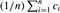

|
|
< Day Day Up > |
|
An interesting problem that can be solved using matroids is the problem of optimally scheduling unit-time tasks on a single processor, where each task has a deadline, along with a penalty that must be paid if the deadline is missed. The problem looks complicated, but it can be solved in a surprisingly simple manner using a greedy algorithm.
A unit-time task is a job, such as a program to be run on a computer, that requires exactly one unit of time to complete. Given a finite set S of unit-time tasks, a schedule for S is a permutation of S specifying the order in which these tasks are to be performed. The first task in the schedule begins at time 0 and finishes at time 1, the second task begins at time 1 and finishes at time 2, and so on.
The problem of scheduling unit-time tasks with deadlines and penalties for a single processor has the following inputs:
a set S = {a1, a2, ..., an} of n unit-time tasks;
a set of n integer deadlines d1, d2, ..., dn, such that each di satisfies 1 ≤ di ≤ n and task ai is supposed to finish by time di; and
a set of n nonnegative weights or penalties w1, w2, ..., wn, such that we incur a penalty of wi if task ai is not finished by time di and we incur no penalty if a task finishes by its deadline.
We are asked to find a schedule for S that minimizes the total penalty incurred for missed deadlines.
Consider a given schedule. We say that a task is late in this schedule if it finishes after its deadline. Otherwise, the task is early in the schedule. An arbitrary schedule can always be put into early-first form, in which the early tasks precede the late tasks. To see this, note that if some early task ai follows some late task aj, then we can switch the positions of ai and aj, and ai will still be early and aj will still be late.
We similarly claim that an arbitrary schedule can always be put into canonical form, in which the early tasks precede the late tasks and the early tasks are scheduled in order of monotonically increasing deadlines. To do so, we put the schedule into early-first form. Then, as long as there are two early tasks ai and aj finishing at respective times k and k + 1 in the schedule such that dj < di, we swap the positions of ai and aj. Since aj is early before the swap, k + 1 ≤ dj. Therefore, k + 1 < di, and so ai is still early after the swap. Task aj is moved earlier in the schedule, so it also still early after the swap.
The search for an optimal schedule thus reduces to finding a set A of tasks that are to be early in the optimal schedule. Once A is determined, we can create the actual schedule by listing the elements of A in order of monotonically increasing deadline, then listing the late tasks (i.e., S - A) in any order, producing a canonical ordering of the optimal schedule.
We say that a set A of tasks is independent if there exists a schedule for these tasks such that no tasks are late. Clearly, the set of early tasks for a schedule forms an independent set of tasks. Letℓ denote the set of all independent sets of tasks.
Consider the problem of determining whether a given set A of tasks is independent. For t = 0, 1, 2, ..., n, let Nt (A) denote the number of tasks in A whose deadline is t or earlier. Note that N0(A) = 0 for any set A.
For any set of tasks A, the following statements are equivalent.
The set A is independent.
For t = 0, 1, 2, ..., n, we have Nt (A) ≤ t.
If the tasks in A are scheduled in order of monotonically increasing deadlines, then no task is late.
Proof Clearly, if Nt (A) >; t for some t, then there is no way to make a schedule with no late tasks for set A, because there are more than t tasks to finish before time t. Therefore, (1) implies (2). If (2) holds, then (3) must follow: there is no way to "get stuck" when scheduling the tasks in order of monotonically increasing deadlines, since (2) implies that the ith largest deadline is at most i. Finally, (3) trivially implies (1).
Using property 2 of Lemma 16.12, we can easily compute whether or not a given set of tasks is independent (see Exercise 16.5-2).
The problem of minimizing the sum of the penalties of the late tasks is the same as the problem of maximizing the sum of the penalties of the early tasks. The following theorem thus ensures that we can use the greedy algorithm to find an independent set A of tasks with the maximum total penalty.
If S is a set of unit-time tasks with deadlines, andℓ is the set of all independent sets of tasks, then the corresponding system (S,ℓ) is a matroid.
Proof Every subset of an independent set of tasks is certainly independent. To prove the exchange property, suppose that B and A are independent sets of tasks and that |B| >; |A|. Let k be the largest t such that Nt (B) ≤ Nt (A). (Such a value of t exists, since N0(A) = N0(B) = 0.) Since Nn(B) = |B| and Nn(A) = |A|, but |B| >; |A|, we must have that k < n and that Nj(B) >; Nj(A) for all j in the range k + 1 ≤ j ≤ n. Therefore, B contains more tasks with deadline k + 1 than A does. Let ai be a task in B - A with deadline k + 1. Let A′ = A ∪ {ai}.
We now show that A′ must be independent by using property 2 of Lemma 16.12. For 0 ≤ t ≤ k, we have Nt (A′) = Nt (A) ≤ t, since A is independent. For k < t = n, we have Nt (A′) ≤ Nt (B) ≤ t, since B is independent. Therefore, A′ is independent, completing our proof that (S,ℓ) is a matroid.
By Theorem 16.11, we can use a greedy algorithm to find a maximum-weight independent set of tasks A. We can then create an optimal schedule having the tasks in A as its early tasks. This method is an efficient algorithm for scheduling unit-time tasks with deadlines and penalties for a single processor. The running time is O(n2) using GREEDY, since each of the O(n) independence checks made by that algorithm takes time O(n) (see Exercise 16.5-2). A faster implementation is given in Problem 16-4.
Figure 16.7 gives an example of a problem of scheduling unit-time tasks with deadlines and penalties for a single processor. In this example, the greedy algorithm selects tasks a1, a2, a3, and a4, then rejects a5 and a6, and finally accepts a7. The final optimal schedule is
〈a2, a4, a1, a3, a7, a5, a6〉,
which has a total penalty incurred of w5 + w6 = 50.
|
Task |
|||||||
|---|---|---|---|---|---|---|---|
|
ai |
1 |
2 |
3 |
4 |
5 |
6 |
7 |
|
|
|||||||
|
di |
4 |
2 |
4 |
3 |
1 |
4 |
6 |
|
wi |
70 |
60 |
50 |
40 |
30 |
20 |
10 |
Solve the instance of the scheduling problem given in Figure 16.7, but with each penalty wi replaced by 80 - wi.
Show how to use property 2 of Lemma 16.12 to determine in time O(|A|) whether or not a given set A of tasks is independent.
Consider the problem of making change for n cents using the fewest number of coins. Assume that each coin's value is an integer.
Describe a greedy algorithm to make change consisting of quarters, dimes, nickels, and pennies. Prove that your algorithm yields an optimal solution.
Suppose that the available coins are in the denominations that are powers of c, i.e., the denominations are c0, c1, ..., ck for some integers c >; 1 and k ≥ 1. Show that the greedy algorithm always yields an optimal solution.
Give a set of coin denominations for which the greedy algorithm does not yield an optimal solution. Your set should include a penny so that there is a solution for every value of n.
Give an O(nk)-time algorithm that makes change for any set of k different coin denominations, assuming that one of the coins is a penny.
Suppose you are given a set S = {a1, a2, ..., an} of tasks, where task ai requires pi units of processing time to complete, once it has started. You have one computer on which to run these tasks, and the computer can run only one task at a time. Let ci be the completion time of task ai , that is, the time at which task ai completes processing. Your goal is to minimize the average completion time, that is, to minimize . For example, suppose there are two tasks, a1 and a2, with p1 = 3 and p2 = 5, and consider the schedule in which a2 runs first, followed by a1. Then c2 = 5, c1 = 8, and the average completion time is (5 + 8)/2 = 6.5.
Give an algorithm that schedules the tasks so as to minimize the average completion time. Each task must run non-preemptively, that is, once task ai is started, it must run continuously for pi units of time. Prove that your algorithm minimizes the average completion time, and state the running time of your algorithm.
Suppose now that the tasks are not all available at once. That is, each task has a release time ri before which it is not available to be processed. Suppose also that we allow preemption, so that a task can be suspended and restarted at a later time. For example, a task ai with processing time pi = 6 may start running at time 1 and be preempted at time 4. It can then resume at time 10 but be preempted at time 11 and finally resume at time 13 and complete at time 15. Task ai has run for a total of 6 time units, but its running time has been divided into three pieces. We say that the completion time of ai is 15. Give an algorithm that schedules the tasks so as to minimize the average completion time in this new scenario. Prove that your algorithm minimizes the average completion time, and state the running time of your algorithm.
Let G = (V, E) be an undirected graph. Using the definition of a matroid, show that (E,ℓ) is a matroid, where A ∈ℓ if and only if A is an acyclic subset of E.
The incidence matrix for an undirected graph G = (V, E) is a |V | × |E| matrix M such that Mve = 1 if edge e is incident on vertex v, and Mve = 0 otherwise. Argue that a set of columns of M is linearly independent over the field of integers modulo 2 if and only if the corresponding set of edges is acyclic. Then, use the result of Exercise 16.4-2 to provide an alternate proof that (E,ℓ) of part (a) is matroid.
Suppose that a nonnegative weight w(e) is associated with each edge in an undirected graph G = (V, E). Give an efficient algorithm to find an acyclic subset of E of maximum total weight.
Let G(V, E) be an arbitrary directed graph, and let (E,ℓ) be defined so that A ∈ℓ if and only if A does not contain any directed cycles. Give an example of a directed graph G such that the associated system (E,ℓ) is not a matroid. Specify which defining condition for a matroid fails to hold.
The incidence matrix for a directed graph G = (V, E) is a |V |×|E| matrix M such that Mve = -1 if edge e leaves vertex v, Mve = 1 if edge e enters vertex v, and Mve = 0 otherwise. Argue that if a set of columns of M is linearly independent, then the corresponding set of edges does not contain a directed cycle.
Exercise 16.4-2 tells us that the set of linearly independent sets of columns of any matrix M forms a matroid. Explain carefully why the results of parts (d) and (e) are not contradictory. How can there fail to be a perfect correspondence between the notion of a set of edges being acyclic and the notion of the associated set of columns of the incidence matrix being linearly independent?
Consider the following algorithm for the problem from Section 16.5 of scheduling unit-time tasks with deadlines and penalties. Let all n time slots be initially empty, where time slot i is the unit-length slot of time that finishes at time i. We consider the tasks in order of monotonically decreasing penalty. When considering task aj , if there exists a time slot at or before aj 's deadline dj that is still empty, assign aj to the latest such slot, filling it. If there is no such slot, assign task aj to the latest of the as yet unfilled slots.
Argue that this algorithm always gives an optimal answer.
Use the fast disjoint-set forest presented in Section 21.3 to implement the algorithm efficiently. Assume that the set of input tasks has already been sorted into monotonically decreasing order by penalty. Analyze the running time of your implementation.
|
|
< Day Day Up > |
|